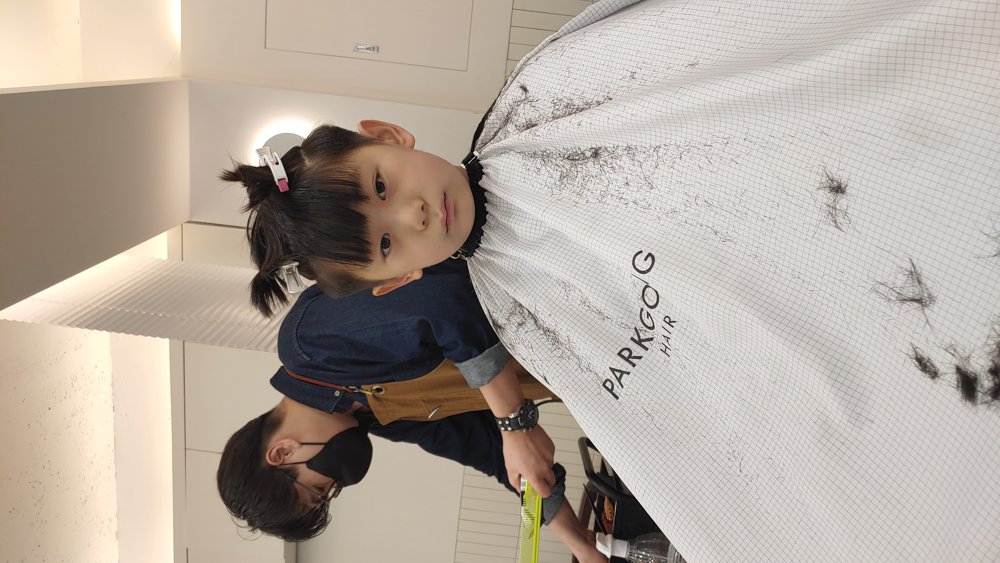

우리 가족 소개
아빠 전병우
엄마 한정
아들 전찬민
딸 전다현

찬민이는 11살입니다. 상징하는 동물은 '스네이크'예요.
현재 "서울 석계초등학교 4학년"에 다니고 있습니다.
동생 다현이를 아주많이 사랑하고 있어요.
피구를 아주 잘하고 스스로 학습하는 것에 많은 노력을 하고 있답니다. 최근 한글 글씨도 멋져지고 있어요.
아침, 저녁으로 새로운 아이템을 받기 위해 게임에도 열심히랍니다.
Please enable JavaScript to view the
comments powered by Disqus.